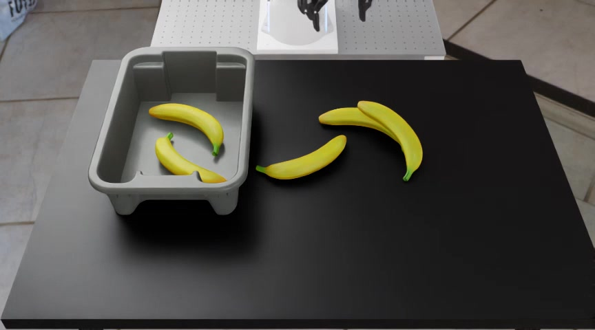
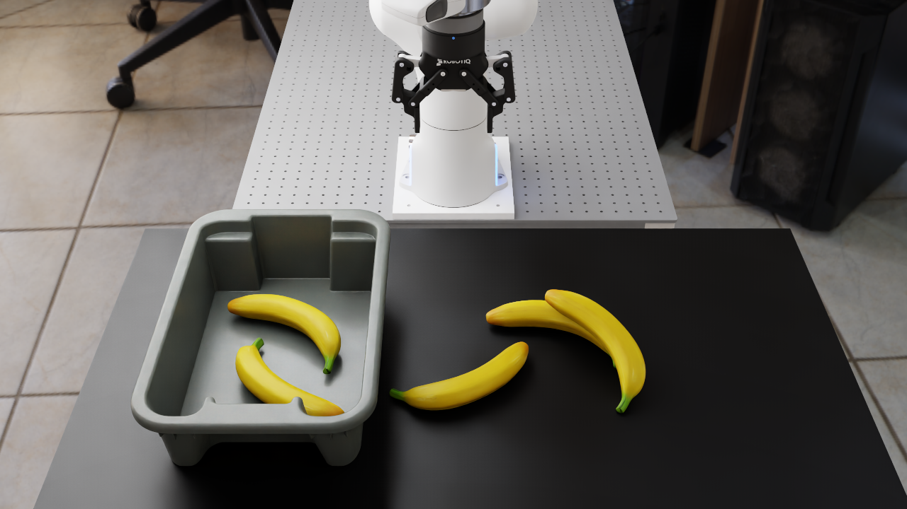
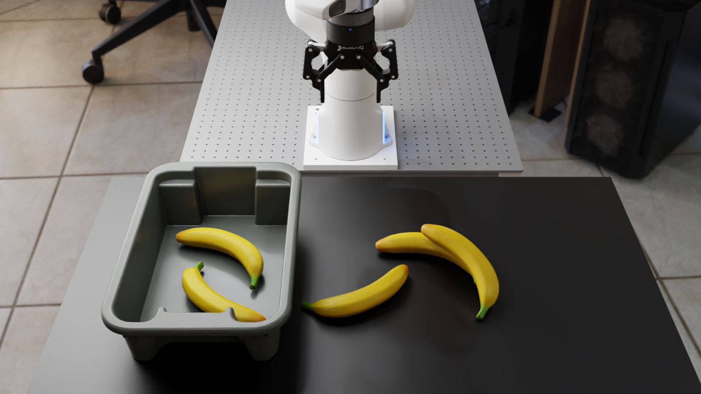
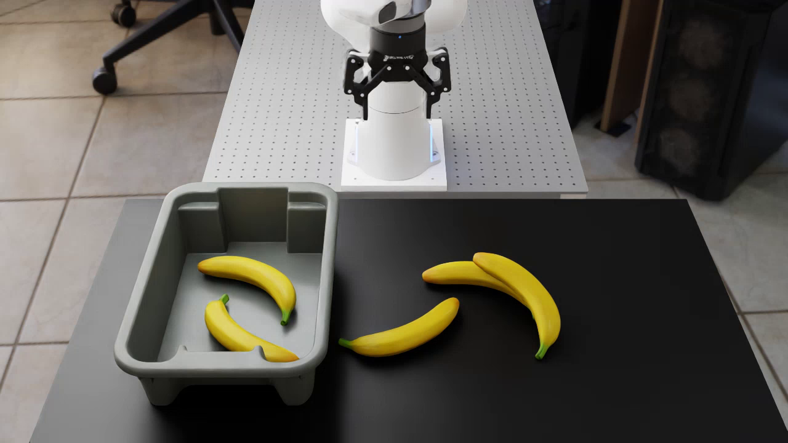
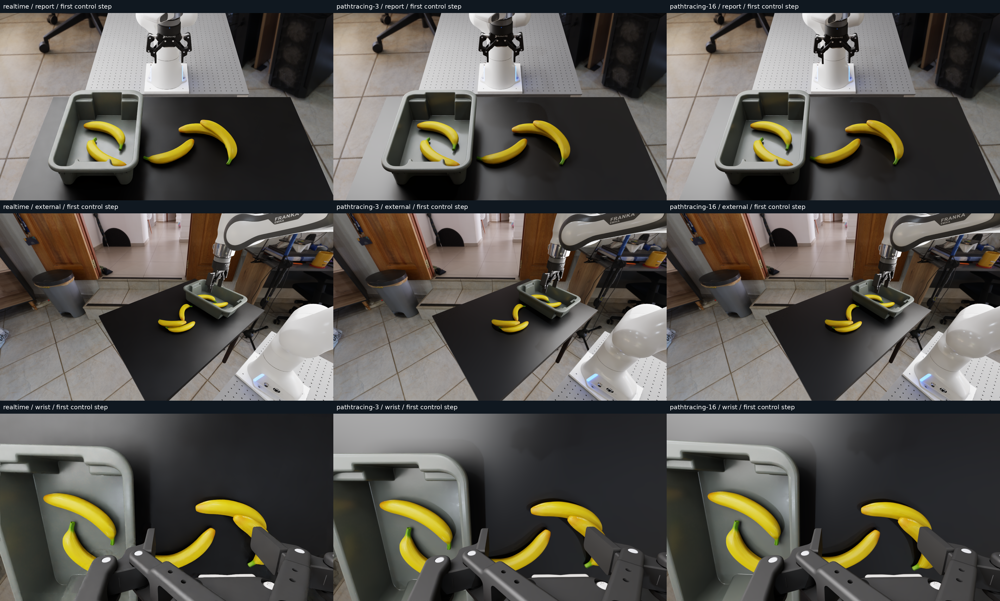

Original RoboLab / Isaac 5 reference
Archived presentation image; camera/reset not matched

The accepted Isaac 6 PR rollout uses realtime DLAA. RoboLab retains its renderer options and defaults. Realtime DLAA and the PR setup use the same scheme. Only the fresh realtime/path-traced pair isolates renderer differences; archived Isaac 5 and the PR rollout are labeled references.
Archived presentation image; camera/reset not matched

Matched seed 0; original materials; PR rendering scheme

Same scene state/camera; 64 spp, total setting 256

Realtime DLAA + DL denoising; seed 0; video frame

Same frozen scene, seed 0, original materials. Click an image to inspect its full-resolution PNG.
Static accumulated path tracing does not establish rollout quality or equivalent observation latency. The accepted PR rollout separately validates realtime rendering during policy motion. Archived Isaac 5 rendering time was not measured; its image is a visual reference only.
Canonical profile · Effective runtime settings · Capture metadata · Image provenance · Fork review PR
One simulator and warmed pi0.5 server, L40, original materials/cameras, seed 0. Realtime and 3-update episodes completed; 16-update result is a partial pre-cancellation motion segment.
Loop includes policy inference, environment/physics/rendering/RGB refresh, and video writes. Simulator startup, policy warmup, and resets are excluded. Environment/render and additional accumulation/refresh are separately measured for completed profiles.
| Renderer | Evaluation loop / step | Measured steps |
|---|---|---|
| realtime | 0.313 s | 300 (episode complete) |
| pathtracing-3 | 4.340 s | 121 (episode complete) |
| pathtracing-16 | 4.346 s | 26 (partial) |
The 16-update figure is approximate partial-run throughput, not a completed episode. Single trajectories do not establish success rates. Archived Isaac 5 timing is unavailable.

These are actual first-control-step frames. Closed-loop trajectories can differ; the frozen pair above isolates appearance. The longer 3-update rollout also succeeded at step 121; report, external, wrist show the placement near its completion.
Timing summary and limitations · Completed per-step measurements